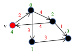

The shortest-path algorithm
The shortest-path algorithm calculates the shortest path from a start node to each node of a connected graph. Developed in 1956 by Edsger W. Dijsktra, it is the basis for all the apps that show you a shortest route from one place to another. In 15 minutes of video, we tell you about the history of the algorithm and a bit about Edsger himself, we state the problem, and then we develop the algorithm.
History of Dijkstra's short-path algorithm
 Edsger W. Dijkstra developed this algorithm in 1956. He was 26 at the time, working on his PhD in the Netherlands. Watch this 3.3 minute video to get a sense of the times and how he developed it. Read it here: 01shortestPathHistory.pdf
Edsger W. Dijkstra developed this algorithm in 1956. He was 26 at the time, working on his PhD in the Netherlands. Watch this 3.3 minute video to get a sense of the times and how he developed it. Read it here: 01shortestPathHistory.pdf
The shortest-path problem
In this video, we state the problem. (2 minutes).
Read it here: 02shortestPathProblem.pdf
The invariant of the algorithm and a theorem about it
The invariant of the algorithm is remarkably simple, consisting of 3 parts. We are also prove a theorem about the invariant, which will help us in the next video to develop the algorithm from the invariant. (4.75 minutes): 03shortestPathInv.pdf
It will help you to get out a blank piece of paper and write down what you remember of the invariant and the theorem. Compare what you wrote to what we wrote and then try again.
The development of the algorithm
We develop the algorithm. As you watch the development, focus on the invariant and see how relatively easily the algorithm is developed from it. It takes only 6 minutes(!) ---allthough we do ask you to stop the video and do some thinking yourself in 4 different places. Read the development here: 04shortestpathDevelop.pdf
Here is Edsger Dijkstra's paper, from 1959. He presents two algorithms; the second one is the shortest-path algorithm:
Some of you may not be comfortable yet with understanding a presentation like this. Instead, you want to see the algorithm being executed. But you don't need us to show you an execution ---you can do it yourself, and you will gain more understanding by doing it yourself. Start with a small graph, like the one used in the problem statement (shown) below, and carefully execute the algorithm, keeping track of what is in the settled and frontier sets and in array d. The algorithm itself is on the second page of the pdf document for this video: 04shortestpathDevelop.pdf

Calculating the shortest paths as well as their lengths using backpointers
This pdf file extends the algorithm to save not only the distance of all shortest paths with start node v but also the paths themselves, using backpointers.
The runtime complexity of the shortest-path algorithm
This pdf file analyzes the expected-case and worst-case time of the algorithm, giving different results for sparse and dense graphs. The analysis is interesting because for all but one line of the algorithm, we can determine exactly how many times it is executed.
Implementing the shortest-path algorithm
This pdf file discusses implementing the algorithm in Java. Nodes will be given not as numbers bu as objects, so the two arrays d and bp cannot be used. Besides discussing the necessary data structures, the pdf file gives a number of stylistic points; following them carefully as one programs will lead more quickly to a well-structured, pleasing, even beautiful implementation.